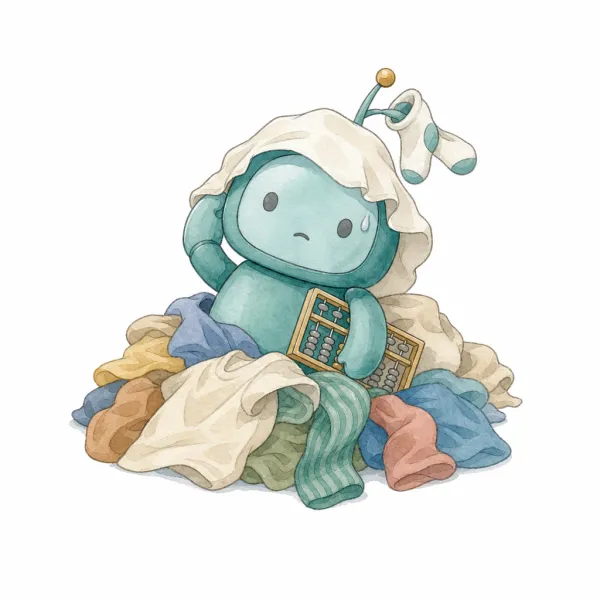
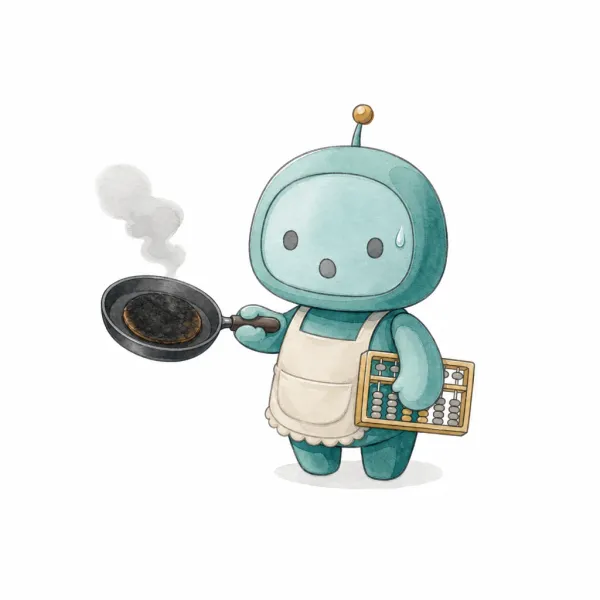

あなたに合うAIの使い方診断・無料・3分
朝のコーヒーの間に、
朝のコーヒーの間に、
今日やることを
AIがもう届けている。
技術者ではない私の、毎日の働き方です。
あなたに合う始め方を、3分の診断でお渡しします。
家事も、仕事も。AIに任せられる所から。プログラムは書きません。
名前もメールも要りません。答えは保存しません。
AIに頼んでみた
たたむのは自分。
ロボは、ときどきこう答えます。

「洗濯もの、たたんどいて」
「……たためる手が、ついていません」

「代わりに晩ごはん作っといて」
「レシピなら、30秒で出せます。包丁は持てません」
「あの人に『ごめん』って言っといて」
「言葉は一緒に考えます。言う人は、あなたです」
たたむのは自分。
「たたむ時間」を作るのは、AI。
AIには体がありません。家事も、人に会うことも、決めることも、あなたの仕事です。
でも、書く・まとめる・並べる・思い出すは、AIの得意なこと。ここを任せると、自分にしかできないことに使える時間が増えるかもしれません。どれくらいかは、人それぞれです。
あなたの毎日だと？
立場を選ぶと、使い方の例が出ます。
ここから先は、できることの「例」です。チャットで頼むだけなら、いまから試せます。
お金・契約・個人情報の判断は、AIに任せません。名前や番号は、隠してから貼ります。
私の1日（個人事業主の例）
私の場合は、
私の場合は、
気づいたら届いています。
どれも、私が毎日つかっている仕組みです。
自分がやるのは、届いたものを読んで、決めることだけ。
送る・払う・契約するなどの判断は、AIに任せません。必ず自分で決めます。
（スマホの画面はイメージです）
診断の前に、1つどうぞ・無料
いま、試してみてください。
頭の中の用事を貼るだけで、今日やることの1枚になります。ChatGPTでもClaudeでも、無料のまま使えます。
頭の中の用事を、思いつくまま全部書きます。
今日やる順に3つ選んで、1枚にまとめてください。
急がないものは「今週中」に分けてください。
【ここに、気になっている用事を、箇条書きでもバラバラでも書く】
出てくる1枚の例
今日の3つ
1. 見積もりの返事（午前中に）
2. 銀行の書類を出す
3. 夕飯の買い物
今週中
・美容院の予約 ・年賀状の住所の整理
これが1つめです。
あなたに合う2つめは、3分の診断でお渡しします。
3分の診断で、分かること。
- 9つの質問に答える
仕事の形・AIの使い方・くり返しの作業の数など。 - あなたのタイプが分かる
5つのタイプの、どれに近いか。 - 今日すぐ試せる頼み方を、もう1つ
「時間を取られる」と答えた作業に合わせて出します。
はじめの一歩会社のルールの中で使う使い方を磨く自動化の入口まかせて回す
結果の画面の見本
使い方を磨くタイプ
AIは使えています。同じ作業のくり返しはまだ少ないので、自動化より「使い方を磨く」方が効きます。
このあと、あなたの答えに合わせた頼み方が1つと、合う使い方ガイドの一覧が出ます。
「今は自動化はまだ早いです」と出ることもあります。
買わなくてよいときは、そう書きます。

この診断を作った人
森川満章（もりかわ みちあき）。お金の先生で、技術者ではありません。
お客さまと話す時間を増やしたくて、裏の作業を少しずつAIに任せてきました。その毎日を、Voicyやnoteで話しています。
仕事で本格的に
毎日、自動で動かしたい事業者の方へ
申込の転記や打ち合わせのまとめを、決めた時間にAIが自分で動かす仕組みもあります。どれが合うかは、まず診断で確かめてください。
Claudeの有料プラン（月3,000円ほど）が、代金とは別に要ります。